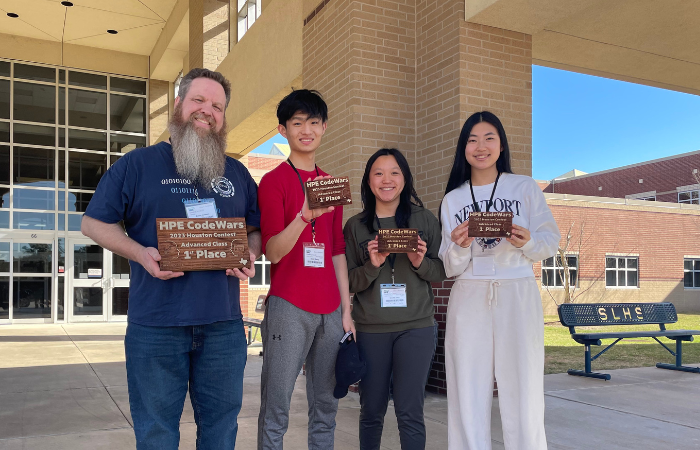
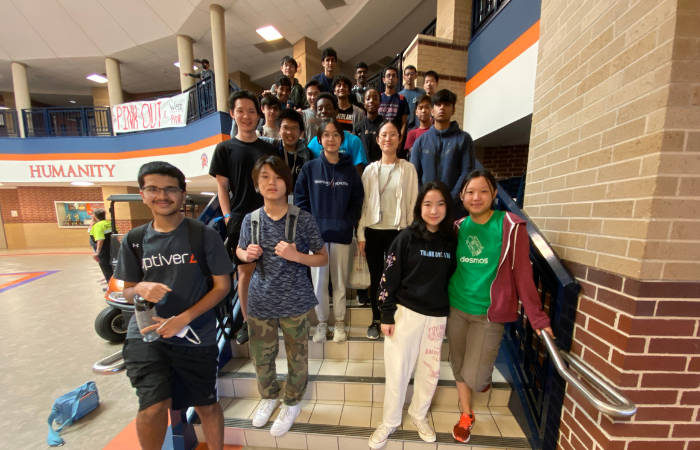
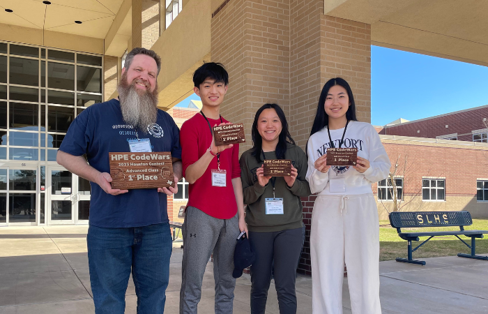
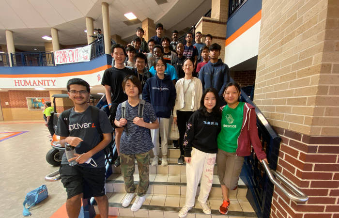

My accessibility work primarily focuses on blind and visually impaired individuals. Currently, I am researching accessible methods to assist blind students in learning math at Sketch Recognition Lab. Additionally, I am developing Audemy, an educational platform specifically designed for blind students. I also am leading KatyYouthHacks, a hackathon promoting accessibility and technology.
I love encouraging other girls to explore the world of tehcnology! I run alGIRLithm, a competitive programming contest for high school girls, and I serve as the co-president of my city's Girls Who Code (GWC) chapter.
Competitive programming is a huge challenge for me, and I've loved all of my experiences and the people I've met along the way! I am the president of my school's computer science club and I compete on our competitive programming team, where we code all around the state.
 



I spend a lot of my time playing around with various technologies like robotics, machine learning, natural language processing, etc. My current favorite tool is Streamlit! You can find some of my projects here.
I play the viola (the best string instrument) and I am a TMEA all-state violist! I am also part of an ensemble, the Horizon Quartet, where we perform at hospitals, senior homes, and other places around the community.